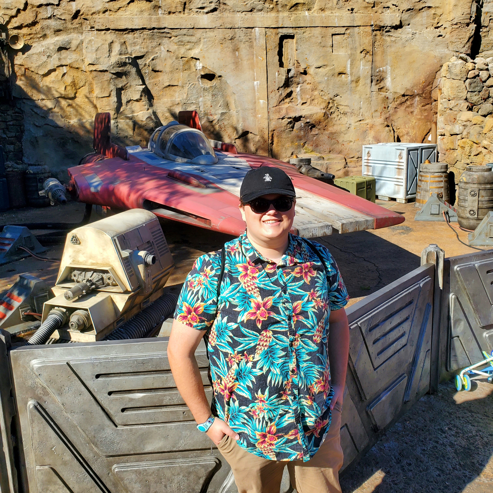

Myself infront of an A-Wing from Star Wars Galaxy's Edge at Walt Disney World
Personal background: I have only been living full time in Charlotte since 2023, lived on campus during previous semesters before then.
Professional background: Currently working at a local Michaels in the Framing department.
Academic background: Acquired an associates degree in Simulation and Game Design.
Background in the subject matter of this course: I have a small amount of knowledge in web design from my associates degree.
Primary Computer Platform: Knowledge with Windows 10, 11, and Linux
Courses I'm taking and reason for each:
ITSC4230 - Intro to Game Design and Development, To gain some fresh experience and possibly acquire a different view on certain aspects of game design.
ITSC3155 - Software Engineering: To learn more about the Engineering process not just focused on the programming of software and applications.
ITIS3135 - Web-Based Application Design and Development: To learn html, css, and to be able to create my own website for my portfolio.
ITSC1212 - Introduction to Computer Science 1 (Java) - a core UNCC CS class I've taught twice before
ITSC3153 - Intro to Artificial Intelligence: To gain an understanding and learn to code Artificial Intelligence.
Funny story or interesting item about yourself to remember you by:
I have broken both of my collar bones each on a separate occasion.
I'd also like to share:
I love driving cars, camping and hiking. I tend to be either stuck at my computer or out in the wilderness, not much in between.